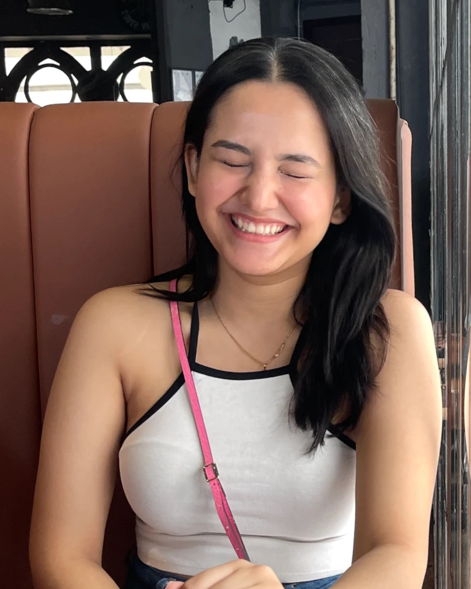

Hi, I'm Maitreyi. I'm a designer, maker, and curious mind who loves figuring out how things work.
I've always been drawn to making things, from imagining how a product could be better to figuring out how an idea could become something real. Over time, that curiosity has taken me from physical products to digital experiences, and now into code, data, and the systems behind them.
These days, I'm learning to build in new ways, following questions wherever they lead, and finding joy in being a beginner all over again.
Current fascinations: Python, systems thinking, good food, dancing, and questions that send me down unexpected rabbit holes.
Experience
- D2BridgeUI Designer, contract2026 – Present
- University College ASUDesignerJan 2026 – Present
- City of ChandlerCreative Arts FellowOct 2025 – Present
- IDSA at ASUPresidentAug 2025 – Present
- VisLab ASUVisual DesignerJun – Dec 2025
- BodyStoriesDesign InternJan 2024 – May 2025
Education
- BS Industrial DesignArizona State University
- Design foundationNational Institute of Design, India